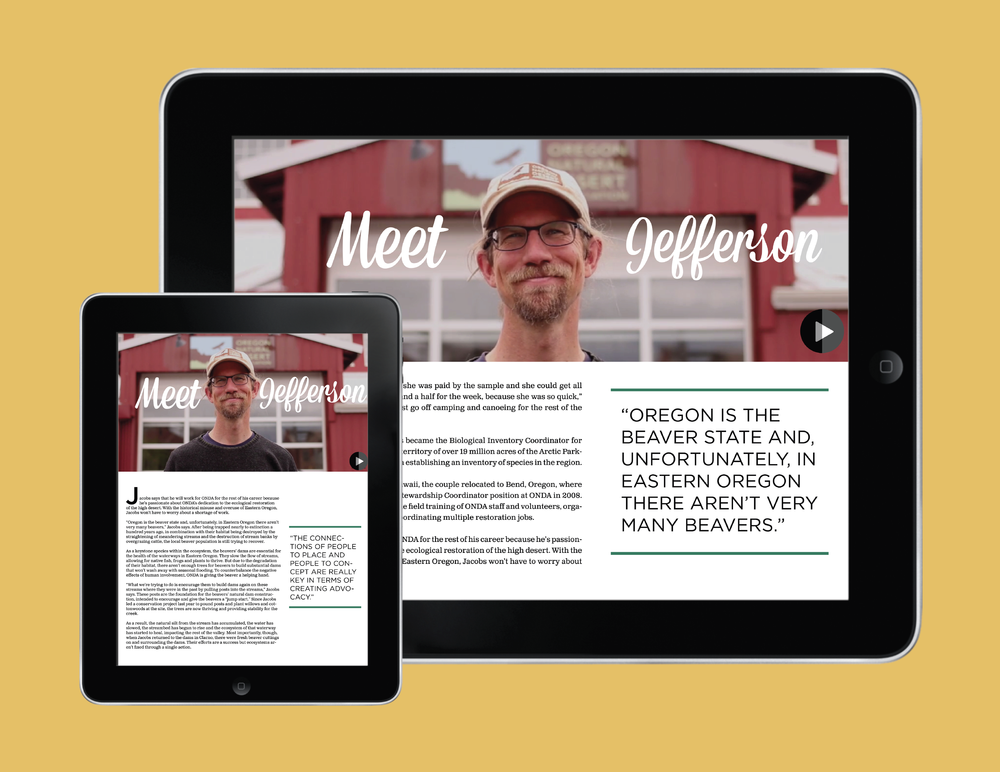
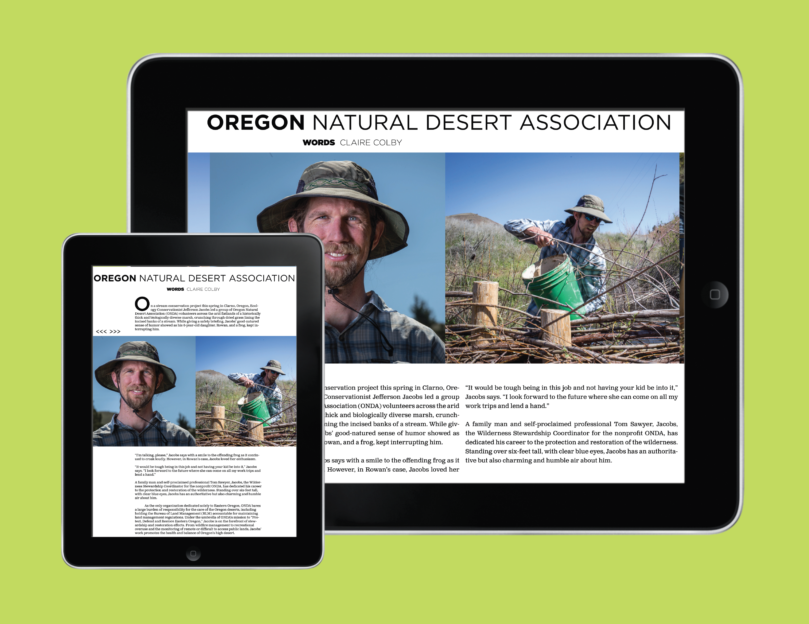
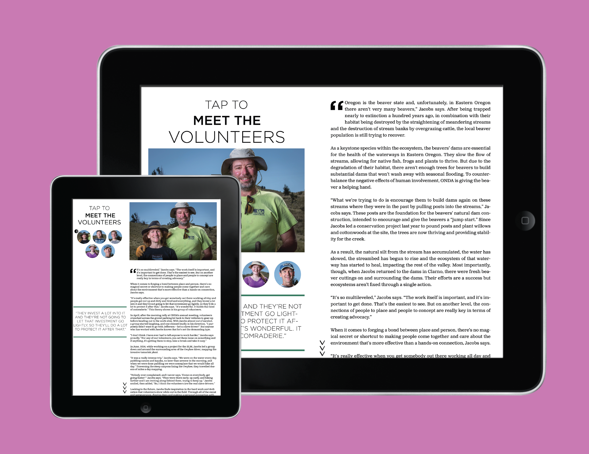
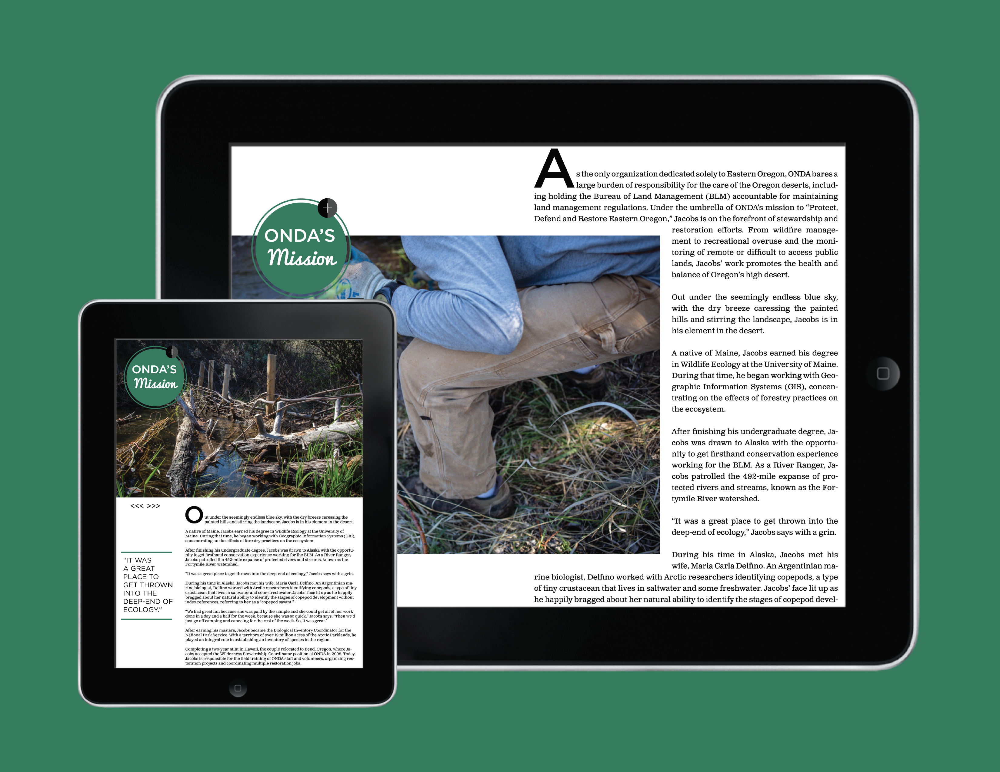

OR MAGAZINEIs an award-winning elective class offered to University of Oregon School of Journalism students. Guided by the principles of solutions journalism, students act as a self-governed interactive news publication, producing human-centered stories about local communities in Oregon relating to each issue’s elected theme: “Grit” and “Shaped by Oregon”. |
|
|  |
We were asked to produce human-centered stories about Oregonians to be published as an interactive iPad publication using Adobe Digital Publishing Suite. |
|  |
I was so drawn to this interactive storytelling approach that I took the class twice, advancing from an entry-level producer to a multimedia and interactive design lead for multiple stories. Thanks to this collaborative experience, I now aspire to produce long-form interactive journalism stories for the likes of NYTimes. |
|  |
With an emphasis on solutions journalism and human-centered storytelling, we produced immersive publications that not only touched on important issues but showcased locals who were championing creative solutions. |
|  |
MY ROLES
|